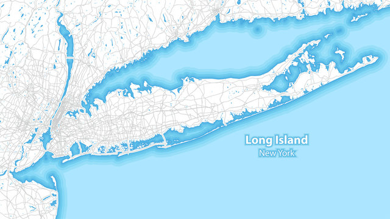

About
Who are we?
We are Long Island's premier Christmas lighting installation service! At Lite-D-Core, we specialize in transforming your residential or commercial property into a festive winter wonderland with our professional and all-inclusive holiday lighting installations. With our experienced team and top-quality materials, we take the hassle out of decorating, leaving you more time to enjoy the magic of the holiday season. Let us make your Christmas bright and beautiful this year.
Our Light Installation Service
-
Free Custom Design and Quote
One of our lighting professionals will evaluate your home and provide digital pictures showing you exactly what your selected decorations will look like on your home.
-
You Pick Your Favorite Option
You then choose which option you like best that fits your taste and budget. We provide all the lights and supplies so you don't have to worry about any additional costs or storage.
-
Professional Installation
We then custom outfit and install your lights and decorations based on your custom design. With over 30 years experience and full insurance, you can rest assured that you, your property and lights are in good hands.
-
Season-long Maintenance
We then maintain your lights and decorations all season long so you don't have to stress about lights not working. If a light goes out or something's off, just give us a call. We'll happily come out to replace lights or make adjustments.
-
Professioanl Removal and Storage
Once the holiday season is over, our lighting professionals will come out and carefully remove all the lights by January 15th, storing them safely until the next year.